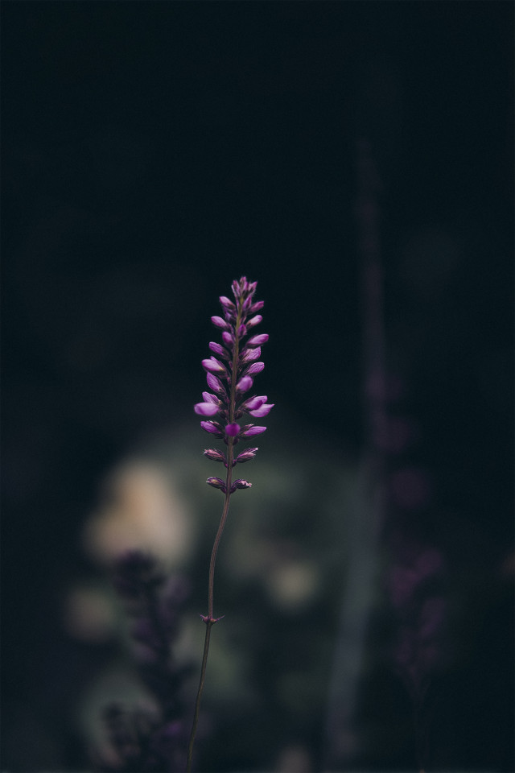

www.linkedin.com/in/efe-illustration
www.linkedin.com/in/efe-illustration info@efe-illustration.com
info@efe-illustration.com +34 XXX-XXX-XXX
+34 XXX-XXX-XXX @efe.illustration
@efe.illustrationQuiénes somos
Detrás de EFE Illustration está una artista apasionada por el arte digital, la ilustración fantástica y el diseño visual emocional. Desde pequeña, su mundo ha estado lleno de bocetos, colores y personajes imaginarios que ahora cobran vida en cada proyecto. Su trabajo se inspira en la naturaleza, el surrealismo y la estética vaporwave, combinando técnicas tradicionales y digitales con una sensibilidad única.
En este espacio encontrarás parte de su trayectoria, proyectos personales y colaboraciones con marcas, autores y otras artistas. Cada ilustración cuenta una historia y busca conectar con quien la observa. El objetivo: crear imágenes que emocionen, inspiren y dejen huella.
